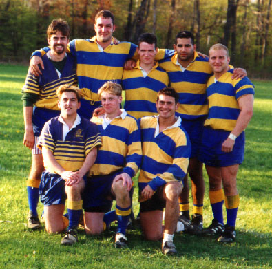

Last game for Seniors Don MacChesney, John MacDonald, Eric McDade, Gabe Gerby, Scott Phillips Matt Fasone, Jason Mayr, Stan Collesano, (not pictured - Constantine Radu,Steve Molnar )  Return to Tournament